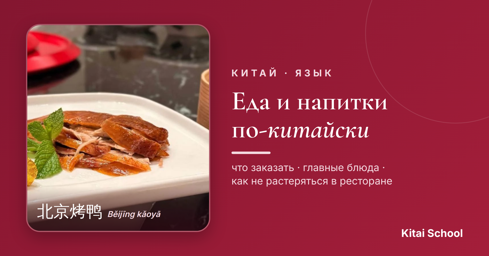
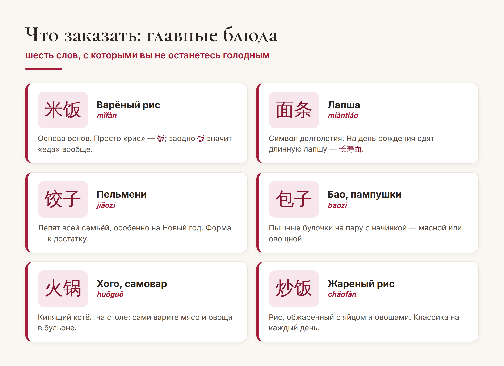
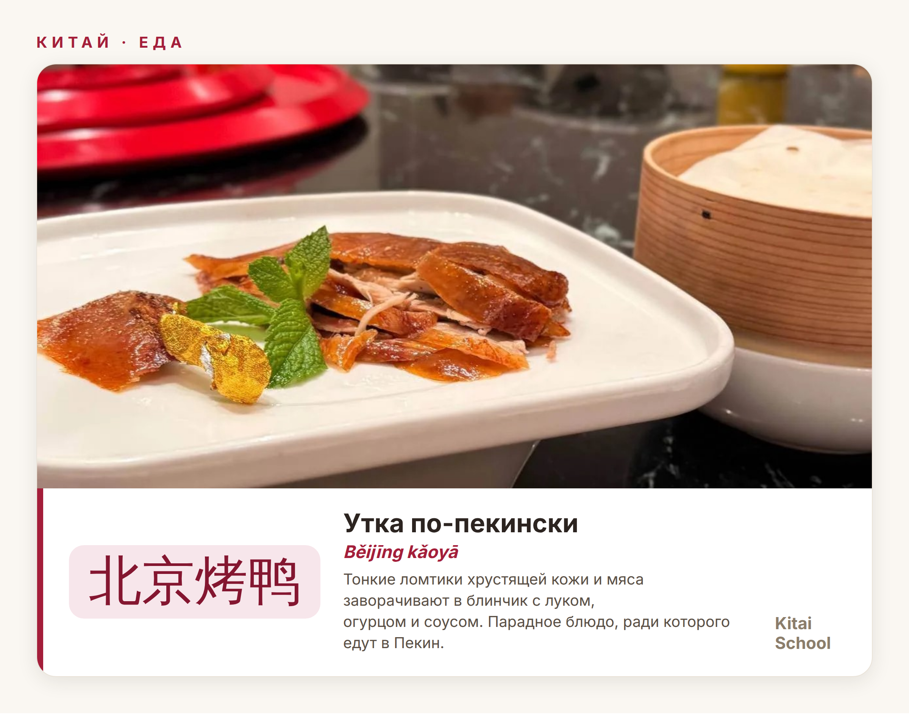
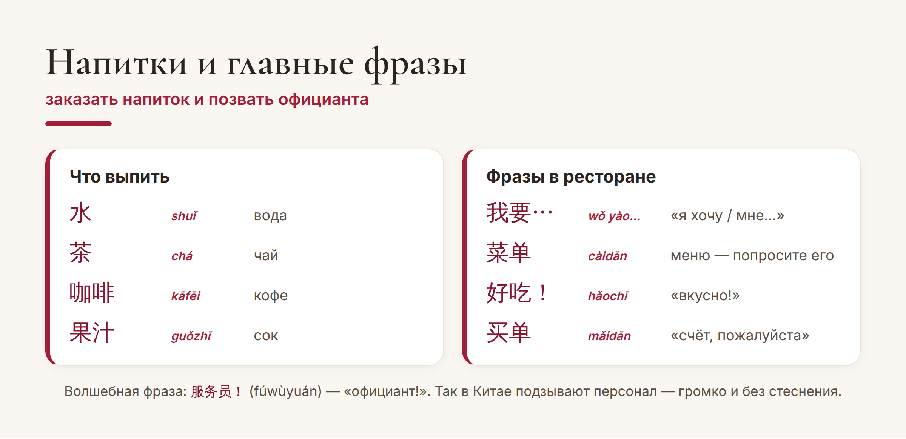

Китай · язык

Китайская кухня — отдельная причина учить язык. Но в настоящем китайском ресторане меню часто без картинок и без перевода, а официант не говорит по-английски. Хорошая новость: чтобы поесть вкусно и по-своему, хватит десятка слов.
Собрала самые нужные названия блюд, напитков и фраз — с ними вы закажете еду в любом уголке Китая. Поехали.
Начнём с того, что точно есть в любом заведении. Эти названия вы будете встречать снова и снова:

Маленькая, но важная деталь: 饭 (fàn) — это и «варёный рис», и «еда» вообще. Поэтому «поесть» звучит как 吃饭 (chī fàn) — буквально «есть рис». А ещё запомните 火锅 (huǒguō), хого: это не блюдо, а целый ритуал, когда компания сама варит ингредиенты в кипящем бульоне прямо за столом.
Если есть одно блюдо, которое стоит попробовать в Китае обязательно, — это утка по-пекински, 北京烤鸭 (Běijīng kǎoyā). Повар нарезает её при вас на тонкие ломтики с хрустящей карамельной кожей, а вы сами заворачиваете их в тонкий блинчик с зелёным луком, огурцом и сладким соусом.

Это не просто еда, а маленький ритуал и повод собраться компанией. Закажете 北京烤鸭 — считайте, что попробовали Китай по-настоящему.
Теперь — что выпить и как объясниться с официантом. Даже пары слов достаточно, чтобы вас поняли:

Схема заказа проще некуда: 我要 (wǒ yào — «я хочу») плюс название блюда. Хотите чай — 我要茶. Готовы платить — зовёте 买单 (mǎidān, «счёт»). И не удивляйтесь, что воду в ресторане часто приносят горячей: в Китае пьют именно тёплую воду, это считается полезным.
Палочки. Никогда не втыкайте 筷子 (kuàizi, палочки) вертикально в рис — это напоминает благовония на похоронах. Кладите их на подставку или поперёк тарелки.
Чай льют друг другу. За столом принято подливать чай соседям, а не только себе. Если наливают вам — в знак благодарности легонько постучите двумя пальцами по столу.
Совет. Не бойтесь заказывать «наугад»: покажите пальцем в меню или на соседний стол и скажите 这个 (zhège — «вот это»). Работает безотказно и звучит по-местному.
Вот и весь набор для первого похода в китайский ресторан. Несколько слов — и еда из стресса превращается в удовольствие. А там, глядишь, захочется читать меню целиком — и это станет отдельной мотивацией продолжать учить язык.
Приятного аппетита! 慢慢吃。